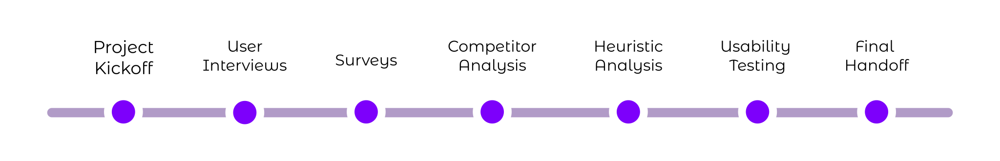

Quicken Simplifi
Usability Testing
Overview
Quicken is a finance management company (originally owned by Intuit). Their new app, Simplifi, is tailored
to micro-business owners, allowing them to manage both their personal and business finances in one place.
For this project, I consulted with the Quicken Simplifi Team to enhance their product's UX experience for
upcoming features such as Client and Project Management and Tax Reporting. My team and I conducted in-depth
user research through user interviews, surveys, competitor analysis, heuristic analysis, and
usability testing. Following each method, we thoroughly analyzed our findings and curated
recommendations to improve the user experience for the client.

User Interviews
During the project kickoff meeting, we devised a questionnaire to probe deeper into the pain points of micro-business owners, ranging from freelancers to small shop proprietors. Conducting paired interviews in casual settings, we explored their current practices, identified shortcomings in their methods, and assessed how our features could improve their workflows. We delved into tax preparation, finance management, project tracking, and client management processes to tailor our solutions effectively.
Analysis
After interviews, we quickly analyzed and noted findings. Then, we identified common themes and had reflective discussions to grasp user challenges.
- Users currently utilize various digital platforms for tax preparation and filing
- Users had a preference for using traditional financial management techniques
- Users with limited tax knowledge hired accountants.
- Users lack differentiation between business and personal finances.
Recommendations
Based on our findings, we formulated these recommendations for our clients.
- Integrate third party apps and tools
- Easier to understand tax reports
- Onboard users with a guarantee of trust
After analysing all the interview we were able to create personas for the product derived from the interviews
Survey*
Sampling
- Target Population: microbusinesses, freelancers, and contractors
- Stratifed Sampling Used to get a more accurate sample for pilot testing
- Target Population: microbusinesses, freelancers, and contractors
Deployment
- Target Population: microbusinesses, freelancers, and contractors
- Stratifed Sampling Used to get a more accurate sample for pilot testing
- Target Population: microbusinesses, freelancers, and contractors
Results
- Target Population: microbusinesses, freelancers, and contractors
- Stratifed Sampling Used to get a more accurate sample for pilot testing
- Target Population: microbusinesses, freelancers, and contractors
* Survey was not deployed for the purposes of this project
Competitor Analysis
In the client meeting, existing competitors were pinpointed based on the client's insights, followed by exhaustive background research to assemble a comprehensive list of fintech companies. These competitors were then systematically categorized into direct, parallel, indirect, analogous, and partial groups. Subsequently, consistent criteria were established for competitor analysis, covering app features, user experience, and basic business models, leading to the creation of a detailed criteria-competitor matrix.

Analysis
- Seamless and Distinct Dashboard lorem impusumlorem impusumlorem impusumlorem impusumlorem impusumlorem impusum
- Integration Capabilities with External Platforms lorem impusumlorem impusumlorem impusumlorem impusumlorem impusumlorem impusum
- Features Assisting Taxationlorem impusumlorem impusumlorem impusumlorem impusumlorem impusumlorem impusum
Recommendations
- Enhance customizability, onboarding, and interactivitylorem impusumlorem impusumlorem impusumlorem impusumlorem impusumlorem impusum
- Expand integration capabilities post-launch lorem impusumlorem impusumlorem impusumlorem impusumlorem impusumlorem impusum
- Distinct tax sectionlorem impusumlorem impusumlorem impusumlorem impusumlorem impusumlorem impusum
Heuristic Evaluation
To examine the client's app, we employed a systematic approach by segmenting it into sections and assigning each segment to team members for evaluation. Utilizing Neilsen and Norman's ten heuristics as a guiding framework, each member assessed their respective section, prioritizing identified issues. Through collaborative efforts, we amalgamated individual evaluations and employed an affinity mapping technique to find common flaws and shortcomings within the app.
Findings
- Inconsistent Layout across the application components displaying similar information have a drastic visual difference.
- Improper Intraction behavior:Bunch of interactions in the app go against the user's mental models leading to an expectation mismatch with the UX
- Lack of a confimation window for sensitive actions:Deleting and Creating transaction,goals,bills have no confimation box, leading to accidental actions
- Absence of effective shortcuts:Lot of places in the apps have room to incorporate shortcuts to Quicken (pun intended) the process
- Inconsistent UI Iconogrpahy:Same things have different icons
Recommendations
- Consistent & Intuitive Layout: use of design system to ensure consistent layouts, elements and interactions
- Double-Check for Edits/Errors: use of feedback/double confirmation to ensure any change is validated by user to ensure consistency and tolerance for errors
- Eliminate excessive redundancy/duplication: use of design system to ensure consistent layouts, elements and interactions
- Incorporating standards and shortcuts: use of design elements/standards such as inline calculation operators in transaction, stopping error propagation such as empty transactions
Usability Testing
We began usability testing by recruiting micro-business owners resembling our target persona from various sources, including team connections, LinkedIn, and college students with side-hustles. Each participant underwent hour-long interviews, completing three tasks using the Quicken Simplifi App while their actions and feedback were recorded. Notes were anonymized and categorized to identify common usability issues across different sections of the app. From these findings, we derived recommendations for our client.
Findings
- Misrepresentation of System State:lorem impusumlorem impusumlorem impusumlorem impusumlorem impusumlorem impusum
- User preferences for tax report formatting:lorem impusumlorem impusumlorem impusumlorem impusumlorem impusumlorem impusum
- Navigation Challenges:lorem impusumlorem impusumlorem impusumlorem impusumlorem impusumlorem impusum
- Efficient Invoicing automation:lorem impusumlorem impusumlorem impusumlorem impusumlorem impusumlorem impusum
- Information Organization Issues:lorem impusumlorem impusumlorem impusumlorem impusumlorem impusumlorem impusum
- Plenty of Interface Issues:lorem impusumlorem impusumlorem impusumlorem impusumlorem impusumlorem impusum
Recommendations
- Reducing Information Overload:lorem impusumlorem impusumlorem impusumlorem impusumlorem impusumlorem impusum
- Confusing Language aided with tool-tips:lorem impusumlorem impusumlorem impusumlorem impusumlorem impusumlorem impusum
- Tax Section:lorem impusumlorem impusumlorem impusumlorem impusumlorem impusumlorem impusum
- Invoicing User Flow:lorem impusumlorem impusumlorem impusumlorem impusumlorem impusumlorem impusumlorem impusumlorem impusumlorem impusumlorem impusumlorem impusumlorem impusum
- Navbar sizing and organization:lorem impusumlorem impusumlorem impusumlorem impusumlorem impusumlorem impusum lorem impusumlorem impusumlorem impusumlorem impusumlorem impusumlorem impusum
My Reflection